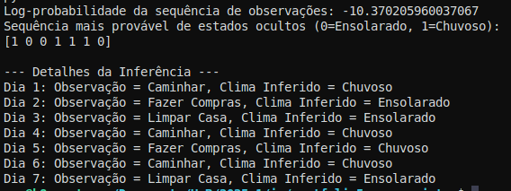

4. Raciocínio probabilístico ao longo do tempo
Este portfólio explora o raciocínio probabilístico ao longo do tempo, um conceito fundamental na Inteligência Artificial (IA) para lidar com ambientes dinâmicos e incertos. Abordaremos a evolução dos estados, a introdução de modelos como os Modelos Ocultos de Markov (HMMs), as principais tarefas de inferência temporal e suas vastas aplicações, utilizando como base o material de Russell e Norvig (2010), os slides da aula 19, e exemplos práticos.
1. Modelos Dinâmicos e Processos de Markov
Em contraste com problemas estáticos, onde o estado do mundo permanece constante ao longo do tempo, os problemas dinâmicos exigem que o sistema acompanhe e preveja mudanças, como o nível de insulina de um paciente ou a trajetória de um robô. Para modelar a evolução do mundo, a IA utiliza modelos de transição, que descrevem a distribuição de probabilidade dos estados mais recentes dadas as observações anteriores.
A suposição de Markov é crucial para tornar esses modelos tratáveis, afirmando que o estado atual de um processo depende apenas de um número fixo e finito de estados anteriores. A forma mais comum é o processo de Markov de primeira ordem, onde o estado atual ($X_t$) depende exclusivamente do estado imediatamente anterior ($X_{t-1}$), ou seja, $P(X_t|X_{t-1})$. Os slides da aula 19 reiteram essa simplicidade. Além disso, a suposição de processo de tempo homogêneo postula que as leis que governam as mudanças de estado não variam ao longo do tempo. O modelo de sensor (ou modelo de observação) complementar especifica como as variáveis de evidência ($E_t$) são geradas a partir do estado atual, $P(E_t|X_t)$.
A distribuição conjunta completa sobre todas as variáveis do sistema ao longo do tempo é definida pelo modelo de estado inicial $P(X_0)$, o modelo de transição $P(X_i|X_{i-1})$ e o modelo de sensor $P(E_i|X_i)$, conforme a equação $P(X_{0:t}, E_{1:t}) = P(X_0) \prod_{i=1}^t P(X_i | X_{i-1}) P(E_i | X_i)$.
2. Conceito de Raciocínio Temporal: Evolução de Estados ao Longo do Tempo
O raciocínio temporal em IA envolve a análise e previsão de como os estados do ambiente evoluem e como os agentes podem interagir com eles ao longo do tempo. Russell e Norvig (2010, p. ix) introduzem o raciocínio probabilístico ao longo do tempo como um componente essencial para sistemas inteligentes que operam em ambientes dinâmicos.
As principais tarefas de inferência em modelos temporais incluem:
- Filtragem (ou Estimação de Estados): Calcula a distribuição de probabilidade a posteriori do estado mais recente, dado todas as evidências observadas até o momento, $P(X_t|e_{1:t})$. Russell e Norvig (2010, p. 572) apresentam a equação recursiva para a filtragem: $P(X_{t+1} | e_{1:t+1}) = \alpha P(e_{t+1} | X_{t+1}) \sum_{x_t} P(X_{t+1} | x_t) P(x_t | e_{1:t})$. O exemplo do "mundo do guarda-chuva", detalhado na aula 19, ilustra o processo passo a passo, mostrando como a probabilidade de chuva é atualizada com base na observação do guarda-chuva.
- Predição: Calcula a distribuição de probabilidade de um estado futuro, dadas as evidências até o momento atual, $P(X_{t+k} | e_{1:t})$ para $k > 0$.
- Suavização: Calcula a distribuição de probabilidade de um estado passado, dadas todas as evidências até o instante de tempo atual, $P(X_k|e_{1:t})$ para $0 \le k < t$. A suavização é mais precisa que a filtragem para estados passados, pois incorpora informações futuras. O algoritmo de suavização também pode ser dividido em uma fase de propagação para frente e outra para trás. A complexidade temporal da suavização é $O(t)$ para uma única etapa $k$, e $O(t)$ para a sequência completa usando programação dinâmica (o algoritmo forward-backward).
- Explicação Mais Provável (Decodificação): Encontra a sequência de estados mais provável que gerou uma sequência de observações dada, $\arg \max_{x_{1:t}} P(x_{1:t} | e_{1:t})$. Esta tarefa é tipicamente resolvida pelo Algoritmo de Viterbi. Ele funciona encontrando o caminho mais provável através de um grafo de estados possíveis em cada etapa de tempo.
- Aprendizado: Refere-se à capacidade de aprender ou corrigir os modelos de transição e sensor a partir de observações.
3. Introdução aos Modelos Ocultos de Markov (HMM)

Figura 3: Representação de um Modelo Oculto de Markov (HMM), com estados ocultos e observações visíveis.
O Modelo Oculto de Markov (HMM) é um modelo probabilístico temporal onde o estado do processo é descrito por uma única variável aleatória discreta. Os valores possíveis dessa variável representam os diferentes estados do mundo. Russell e Norvig (2010, p. 578) explicam que, mesmo que um modelo tenha múltiplas variáveis de estado, ele pode ser adaptado ao framework HMM combinando-as em uma única "megavariável".
Russell e Norvig (2010, p. 553) e Jurafsky e Martin (2021, p. A.2) fornecem uma definição formal dos HMMs, que incluem:
- Q: Um conjunto de estados discretos.
- A: Uma matriz de probabilidades de transição ($a_{ij}$), indicando a probabilidade de mover do estado $i$ para o estado $j$.
- O: Uma sequência de observações.
- B: Um conjunto de probabilidades de observação (também chamadas de probabilidades de emissão, $b_i(o_t)$), que expressam a probabilidade de uma observação $o_t$ ser gerada por um estado $i$.
- $\pi$: Uma distribuição de probabilidade inicial sobre os estados.
Os HMMs de primeira ordem baseiam-se em duas premissas simplificadoras: a suposição de Markov, onde a probabilidade de um estado depende apenas do estado anterior, e a independência de saída, onde a probabilidade de uma observação depende apenas do estado que a produziu.
O exemplo do "mundo do guarda-chuva" é um HMM canônico, com a variável de estado "chuva" e a observação "guarda-chuva". Outro exemplo é o problema do sorvete de Jason Eisner (2002), onde as observações são o número de sorvetes consumidos, e os estados ocultos são as temperaturas (quente ou frio).
A aprendizagem dos parâmetros de um HMM (as matrizes A e B) é tipicamente realizada pelo algoritmo Forward-Backward, que é uma instância do algoritmo Expectation-Maximization (EM). Este algoritmo utiliza a suavização para estimar as contagens esperadas de transições e emissões.
4. Cálculo de Distribuições Marginais, Filtragem, Previsão, Suavização e Explicação
As tarefas de inferência temporal são cruciais para extrair informações úteis dos modelos.
- Filtragem: Como descrito anteriormente, calcula $P(X_t | e_{1:t})$. Russell e Norvig (2010, p. 572) demonstram a aplicação da equação de filtragem ao "mundo do guarda-chuva".
- Suavização: Calcula $P(X_k | e_{1:t})$ para estados passados, aproveitando todas as evidências até o presente. A figura 15.3 de Russell e Norvig (2010) ilustra visualmente a suavização. A recursão de suavização utiliza mensagens "forward" e "backward" que se propagam no tempo. O cálculo da probabilidade de chuva no dia 1, dadas as observações dos dias 1 e 2 no exemplo do guarda-chuva, é um exemplo de suavização.
- Explicação Mais Provável (Viterbi): O algoritmo de Viterbi, descrito em Russell e Norvig (2010, p. 576), é usado para encontrar a sequência de estados ocultos mais provável que gerou uma dada sequência de observações. Como os slides da aula 19 explicam, ele constrói uma "treliça" (trellis) para identificar o caminho de maior probabilidade, como ilustrado na Figura 15.5a de Russell e Norvig (2010). Este algoritmo possui complexidade linear em $t$ (tempo), mas requer espaço linear para armazenar os ponteiros do melhor caminho.
5. Aplicações Práticas em Robótica, Diagnóstico e PNL
O raciocínio probabilístico ao longo do tempo é aplicado em diversas áreas da IA:
- Robótica: Filtros de Kalman são amplamente utilizados para rastreamento e estimação de estado em sistemas contínuos, como a posição e velocidade de aviões. Russell e Norvig (2010, p. 979) destacam que a percepção robótica pode ser vista como inferência temporal, onde filtros de Kalman e HMMs representam os modelos de transição e sensor. Aplicações incluem a localização e mapeamento em robótica (SLAM) com filtros de partículas Rao-Blackwellizados (RBPF), e o controle de robôs. O modelo de bateria e movimento de robôs é um exemplo de rede Bayesiana dinâmica (DBN) em robótica.
- Diagnóstico e Raciocínio Prognóstico: Modelos probabilísticos temporais são úteis para diagnosticar condições que mudam ao longo do tempo. Redes Bayesianas, por exemplo, são usadas em sistemas de diagnóstico médico.
- Processamento de Linguagem Natural (PNL): HMMs são amplamente empregados em reconhecimento de fala e processamento de linguagem em geral. N-gramas são modelos probabilísticos para sequências de palavras ou caracteres. A extração de informação de textos ruidosos também se beneficia de HMMs. Além disso, o algoritmo de Viterbi é aplicado na análise sintática, como no Earley parser. A aula 19 exemplifica o uso de HMMs para identificar o "speaker" (palestrante) e datas em anúncios de palestras.
6. Visualização dos Conceitos com Exemplos Práticos
A compreensão dos conceitos de raciocínio probabilístico ao longo do tempo é significativamente aprimorada através de exemplos e implementações.
- Exemplo do Guarda-Chuva (UmbrellaWorld.py): Como vimos no exemplo do guarda-chuva na aula 19, este cenário simples de prever chuva com base na observação de um guarda-chuva é um exemplo clássico de HMM. Ele demonstra de forma intuitiva como a filtragem e a suavização funcionam. A disponibilidade do código
UmbrellaWorld.pypermite aos alunos visualizar a aplicação da matemática em um cenário prático. - Exemplo do Sorvete (IceCream.py): Embora o arquivo
IceCream.pynão tenha sido fornecido nos materiais, o exemplo do sorvete (Jason Eisner, 2002) é um HMM didático que relaciona o número de sorvetes com a temperatura oculta (quente ou fria). Este exemplo, presente em materiais complementares como Jurafsky e Martin (2021), reforça a ideia de inferência sobre estados ocultos a partir de observações. - Vídeos das Aulas: Os slides da aula 19 recomendam vídeos como "Hidden Markov Model Clearly Explained!" e "Hidden Markov Model in Python", que são recursos valiosos para a visualização e implementação prática dos algoritmos de HMMs, consolidando o entendimento da teoria com a prática.
Projeto
Cenário: Clima Oculto e Atividades Observadas
Nesta seção, estudo como agentes inteligentes podem lidar com a incerteza que muda com o tempo, utilizando modelos probabilísticos dinâmicos. Com base nos capítulos 15 e 16 do livro do Russell e Norvig (2010), vídeos explicativos e os slides da aula 19, explorei conceitos como Processos de Markov, Modelos Ocultos de Markov (HMMs) e as principais tarefas de inferência temporal: filtragem, predição, suavização e explicação.
O objetivo foi entender como agentes podem atualizar suas crenças ao longo do tempo, mesmo quando não têm acesso direto ao estado real do mundo. Isso é especialmente importante em ambientes parcialmente observáveis, como no caso de um robô que tenta se localizar em um mapa apenas com sensores barulhentos, ou em diagnósticos médicos com sintomas ambíguos.
Além da parte teórica, apliquei os conceitos em um exemplo prático usando a biblioteca hmmlearn em Python, onde implementei um HMM simples, com definição de estados ocultos e observações, e usei o algoritmo de Viterbi para descobrir a sequência mais provável de estados escondidos. Essa implementação ajudou a consolidar os conceitos vistos nos materiais e mostrou como esses modelos podem ser aplicados em problemas reais.
Construção do Modelo
-
Estados Ocultos:
-
0 = Ensolarado -
1 = Chuvoso -
Observações:
-
0 = Caminhar 1 = Fazer Compras-
2 = Limpar Casa -
Probabilidades:
-
Inicial: P(Ensolarado) = 0.6, P(Chuvoso) = 0.4
-
Transição entre Estados:
- De Ensolarado → Ensolarado: 0.7
- De Ensolarado → Chuvoso: 0.3
- De Chuvoso → Ensolarado: 0.4
- De Chuvoso → Chuvoso: 0.6
-
Emissão (atividade observada dado o clima):
-
Ensolarado → [Caminhar: 0.1, Fazer Compras: 0.4, Limpar Casa: 0.5]
- Chuvoso → [Caminhar: 0.6, Fazer Compras: 0.3, Limpar Casa: 0.1]
-
Observações registradas durante 7 dias:
-
Caminhar, Fazer Compras, Limpar Casa, Caminhar, Fazer Compras, Caminhar, Limpar Casa
Código Python
import numpy as np
from hmmlearn import hmm
# 1. Definindo os parâmetros do HMM
# Estados ocultos: 0 = Ensolarado, 1 = Chuvoso
# Observações: 0 = Caminhar, 1 = Fazer Compras, 2 = Limpar Casa
# Probabilidades Iniciais (start_probability):
# P(Ensolarado no dia 1), P(Chuvoso no dia 1)
start_probability = np.array([0.6, 0.4])
# Probabilidades de Transição (transition_probability):
# P(Estado_t+1 | Estado_t)
# Linhas: Estado_t (Ensolarado, Chuvoso)
# Colunas: Estado_t+1 (Ensolarado, Chuvoso)
# Ex: P(Ensolarado | Ensolarado) = 0.7, P(Chuvoso | Ensolarado) = 0.3
# Ex: P(Ensolarado | Chuvoso) = 0.4, P(Chuvoso | Chuvoso) = 0.6
transition_probability = np.array([
[0.7, 0.3],
[0.4, 0.6]
])
# Probabilidades de Emissão (emission_probability):
# P(Observação | Estado Oculto)
# Linhas: Estado Oculto (Ensolarado, Chuvoso)
# Colunas: Observação (Caminhar, Fazer Compras, Limpar Casa)
# Ex: P(Caminhar | Ensolarado) = 0.1, P(Fazer Compras | Ensolarado) = 0.4, P(Limpar Casa | Ensolarado) = 0.5
# Ex: P(Caminhar | Chuvoso) = 0.6, P(Fazer Compras | Chuvoso) = 0.3, P(Limpar Casa | Chuvoso) = 0.1
emission_probability = np.array([
[0.1, 0.4, 0.5],
[0.6, 0.3, 0.1]
])
# 2. Criando o Modelo HMM
# n_components é o número de estados ocultos
model = hmm.CategoricalHMM(n_components=2, tol=1e-2, n_iter=100)
model.startprob_ = start_probability
model.transmat_ = transition_probability
model.emissionprob_ = emission_probability
# 3. Sequência de Observações
# Vamos supor que observamos as seguintes atividades ao longo de 7 dias:
# Dia 1: Caminhar (0)
# Dia 2: Fazer Compras (1)
# Dia 3: Limpar Casa (2)
# Dia 4: Caminhar (0)
# Dia 5: Fazer Compras (1)
# Dia 6: Caminhar (0)
# Dia 7: Limpar Casa (2)
# A sequência de observações deve ser um array 2D, onde cada observação é uma lista de um elemento.
observations = np.array([[0], [1], [2], [0], [1], [0], [2]])
# 4. Inferência: Descodificando a sequência de estados ocultos (Algoritmo de Viterbi)
# O algoritmo de Viterbi nos dá a sequência mais provável de estados ocultos
# que gerou a sequência de observações.
logprob, hidden_states = model.decode(observations, algorithm="viterbi")
print("Log-probabilidade da sequência de observações:", logprob)
print("Sequência mais provável de estados ocultos (0=Ensolarado, 1=Chuvoso):")
print(hidden_states)
# Vamos mapear os estados para algo mais legível
state_map = {0: "Ensolarado", 1: "Chuvoso"}
observed_map = {0: "Caminhar", 1: "Fazer Compras", 2: "Limpar Casa"}
print("\n--- Detalhes da Inferência ---")
for i, obs_idx in enumerate(observations.flatten()):
print(f"Dia {i+1}: Observação = {observed_map[obs_idx]}, Clima Inferido = {state_map[hidden_states[i]]}")
Resultado

Considerações Finais
O projeto demonstrou como modelos ocultos de Markov podem ser usados para lidar com incerteza ao longo do tempo. Através do algoritmo de Viterbi, foi possível estimar estados ocultos com base em observações, mostrando a utilidade prática desse tipo de raciocínio probabilístico.
Referências
-
Russell, S., & Norvig, P. (2010). Artificial Intelligence - A Modern Approach (3rd ed.). Prentice Hall. (Observação: As citações no texto referem-se à 3ª edição, que o usuário especificou como "Russell e Norvig (2010)", embora algumas menções nos materiais originais possam referir-se a edições anteriores).
-
Tdunningvectorization: Own work, CC BY 3.0 https://creativecommons.org/licenses/by/3.0, via Wikimedia Commons
-
Jurafsky, D., & Martin, J. H. (2021). Speech and Language Processing (Draft of December 29, 2021). (Disponível em formato PDF como "Daniel Jurafsky2021.pdf").
- FGA0221 – Inteligência Artificial. (s.d.). Redes Bayesianas. (Material de aula em formato PDF: "FGA0221 – IA - 16.pdf").
- FGA0221 – Inteligência Artificial. (s.d.). Redes Bayesianas – 2ª Parte. (Material de aula em formato PDF: "FGA0221 – IA - 17.pdf").
- FGA0221 – Inteligência Artificial. (s.d.). Raciocínio probabilístico ao longo do tempo. (Material de aula em formato PDF: "FGA0221 – IA - 18.pdf").
- FGA0221 – Inteligência Artificial. (s.d.). Raciocínio probabilístico ao longo do tempo – Parte 2. (Material de aula em formato PDF: "FGA0221 – IA - 19.pdf").
- FGA0221 – Inteligência Artificial. (s.d.). Filtro de Kalman Expanation. (Material de aula em formato PDF: "FGA0221 – IA - 20.pdf").
- Alpaydin, E. (2014). Machine Learning - An Algorithmic Perspective (2nd ed.). Springer. (Disponível em formato PDF como "Machine Learning - An Algorithmic Perspective 2nd edition 2014.pdf").
- Sutton, R. S., & Barto, A. G. (2015). Reinforcement Learning: An Introduction (2nd ed.). A Bradford Book, The MIT Press. (Disponível em formato PDF como "Reinforcement-Learning:_An_Introduction.pdf").
- Luger, G. F. (2008). Artificial intelligence: Structures and strategies for complex problem solving (6th ed.). Pearson Education. (Disponível em formato PDF como "artificial intelligence structures and strategies for complex problem solving.pdf").
| Versão | Data | Modificação | Nome | GitHub |
|---|---|---|---|---|
1.0 |
16/07/2025 | Criação do documento | Ana Beatriz Norberto | @ananorberto |